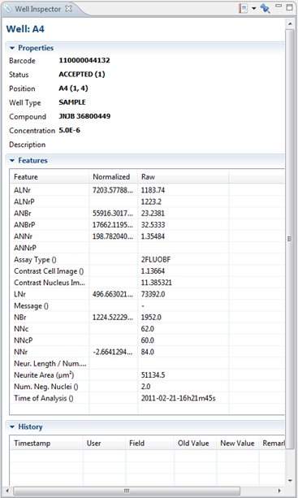

The Well Inspector gives additional information about the currently selected well. The information is divided in 3 categories:
- Properties: A list of properties about the selected well and the plate it belongs to.
- Features: A list of features of the selected well, showing the normalized and the raw values.
- History: A list of logged actions that has been performed on this well, like rejecting. Each log gets a timestamp, the user that performed the action, the field, the old and new values as included information.
To open the Well Inspector, right-click on a well and select Inspectors > Well Inspector

These are the available options in this view:
| Open or create a Saved View or Report. | |
| Pin (freeze) the contents so they will no longer change when another well is selected. |